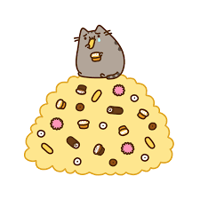

Welcome to my About Me page!!
This whole page is a whole page about me, the creator of this page and pretty much what kind of person I am. Whether you think I am cool or lame or just straight up weird, that is fine with me :D
I am a Junior in Summit Public Schools: Shasta in the Daly City, California.
I have taken dance class for 8 years. I am currently taking competitive tap, jazz, and hip-hop. I have participated in Spark of Creation Studio's remakes of 'Little Mermaid Jr' and 'Seussical Jr'. I have been a teacher's assistant for 2 years at the studio and will be assisting for ballet+tap, tap and hip hop classes this year.
I am a huge kpop fan. If you don't know what kpop is, it's short for 'Korean pop'. I like it for the variety of styles, artists and dance routines. There are a couple hundred artists and groups, not including sub-groups, which are groups within groups. My personal favorite groups are SHINee, EXO, Seventeen, and BTS.
I love food! I mean who doesn't? I love almost any type of food. Chinese food, Mexican food, Korean food, Japanese food, Italian food, junk food, the list goes on!

I love to read fiction books. Fantasy books like the Percy Jackson series and the Harry Potter series. I also enjoy reading graphic novels such as manga and comic books. Also, the book is always better than the movie.
I like to watch anime. I'm not obsessed like some people who are like " KAWAII-DESU! NOTICE ME SENPAI!" I'm a normal person who likes to watch anime for entertainment and when I am bored. I tend to watch anime that are mecha (science fiction, involve robots) or involve students in an alternate universe. A few of my favorite animes are Guilty Crown, Your Lie in April, Charlotte, and Assassination Classroom.